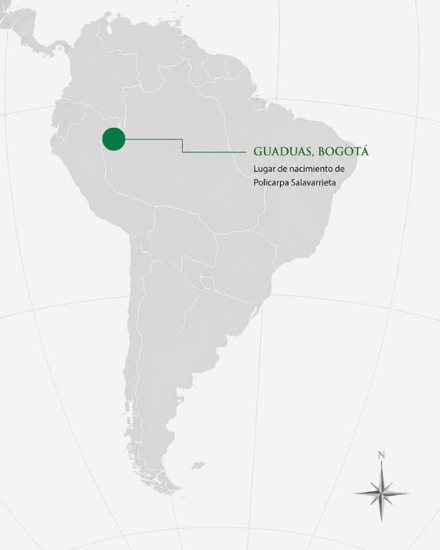

Policarpa Salavarrieta, "La Pola"
Guaduas, 26 de enero de 1795 – Bogotá, 14 de noviembre de 1817
Joven revolucionaria de Nueva Granada que trabajó como espía para las fuerzas patriotas y fue ejecutada en 1817 sin abandonar sus ideales de libertad.
← Volver a Heroínas
Presentación
Policarpa Salavarrieta, conocida como "La Pola", nació en Guaduas, en el Virreinato de Nueva Granada —actual Colombia—, en 1795. Actuó principalmente en Bogotá, donde entró en contacto con los círculos patriotas que resistían el dominio español tras la reconquista realista. Desempeñó un papel clave como espía: reunió información sobre los movimientos del ejército español, transportó mensajes secretos y colaboró en el reclutamiento de soldados y en la protección de revolucionarios perseguidos. Es una figura fundamental de la independencia de Nueva Granada porque su labor de inteligencia debilitó el control español en el norte de Sudamérica, y porque su ejecución, enfrentada sin abandonar sus ideales, la convirtió en uno de los símbolos más reconocidos de la resistencia latinoamericana.

Logros destacados
Una de las principales espías
Fue una de las principales espías de la independencia de Nueva Granada.
Información estratégica
Reunió información estratégica sobre los movimientos del ejército español.
Reclutamiento y protección
Ayudó a reclutar soldados y a proteger a revolucionarios perseguidos.
Símbolo de resistencia
Es una de las figuras más reconocidas de la independencia colombiana.
Su aporte a la independencia argentina y sudamericana
Las luchas independentistas de América del Sur estuvieron conectadas entre sí. Aunque algunas de estas mujeres no actuaron directamente en el actual territorio argentino, sus acciones contribuyeron a debilitar el dominio español y a fortalecer la emancipación del continente. De esta manera, también favorecieron, directa o indirectamente, la consolidación de la independencia argentina.
Aporte regional e indirecto- Participó en la independencia de Nueva Granada, actual Colombia.
- Realizó tareas de espionaje, mensajería y reclutamiento.
- Su labor debilitó el control español en el norte de Sudamérica.
- Aunque no actuó en Argentina, formó parte del proceso continental que terminó con el dominio español en gran parte de América.
- Su aporte a Argentina debe describirse como regional e indirecto.
Ideas
Los principios que guiaron su compromiso con la causa independentista:
- Defendió la libertad frente al dominio español.
- Creía que la independencia requería compromiso, organización y sacrificio.
- Comprendió la importancia de la información para el desarrollo de la revolución.
Acciones
Lo que hizo, concretamente, en su labor de espionaje y organización:
- Trabajó como espía para las fuerzas patriotas.
- Reunió información sobre los movimientos del ejército español.
- Transportó mensajes secretos.
- Ayudó a reclutar soldados para la causa independentista.
- Colaboró con la fuga y protección de revolucionarios.
- Fue capturada y ejecutada en 1817.
Legado
Cómo es recordada y por qué continúa siendo una figura fundamental:
- Es una de las principales heroínas de la independencia de Colombia.
- Su valentía la convirtió en un símbolo latinoamericano de resistencia.
- Su historia demuestra la importancia de las tareas de inteligencia y espionaje realizadas por mujeres.
Línea de tiempo de Policarpa Salavarrieta
-
1795
Nacimiento. Nace en Guaduas, Nueva Granada.
-
Comienzos del siglo XIX
Traslado a Bogotá. Se instala en la ciudad y entra en contacto con los círculos patriotas.
-
1817
Trabajo de espionaje. Reúne información sobre los movimientos del ejército español.
-
1817
Reclutamiento y protección. Colabora en el reclutamiento de soldados y en la protección de revolucionarios perseguidos.
-
Noviembre de 1817
Captura. Es capturada por las autoridades españolas.
-
14 de noviembre de 1817
Ejecución. Es ejecutada en Bogotá sin abandonar sus ideales de libertad.
La Pola enfrentó su ejecución sin abandonar sus ideales de libertad.